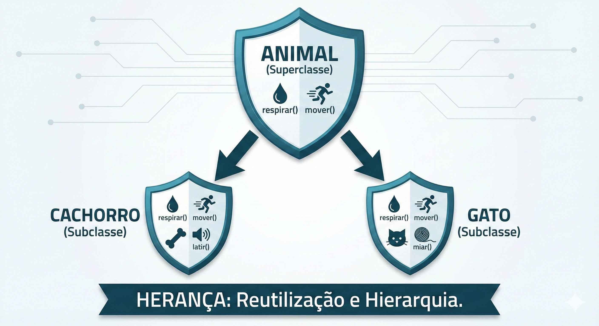

Herança é um mecanismo que permite que uma classe (chamada subclasse ou classe filha) herde atributos e métodos de outra classe (chamada superclasse ou classe pai). Isso promove a reutilização de código e cria uma hierarquia natural entre as classes.

É o tipo mais comum de herança. Uma subclasse herda de apenas uma superclasse, criando uma linha direta de relacionamento entre as duas classes.
class Animal {
String nome;
void comer() { System.out.println("Comendo..."); }
}
class Cachorro extends Animal {
void latir() { System.out.println("Au au!"); }
}
Ocorre quando uma subclasse herda de duas ou mais superclasses. Em C++ isso é permitido diretamente. Em Java, é simulada com o uso de interfaces. O modificador Protected é frequentemente utilizado neste contexto.
É quando uma cadeia de herança tem mais de dois níveis. A classe B herda de A, e a classe C herda de B, formando uma hierarquia em cascata.
class Veiculo { }
class Carro extends Veiculo { }
class CarroEsportivo extends Carro { }
Ocorre quando várias subclasses herdam de uma mesma superclasse. A classe pai é compartilhada por múltiplos filhos, cada um com suas próprias especializações.